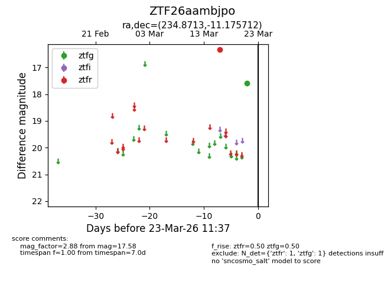
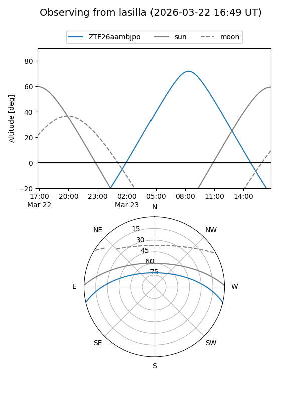
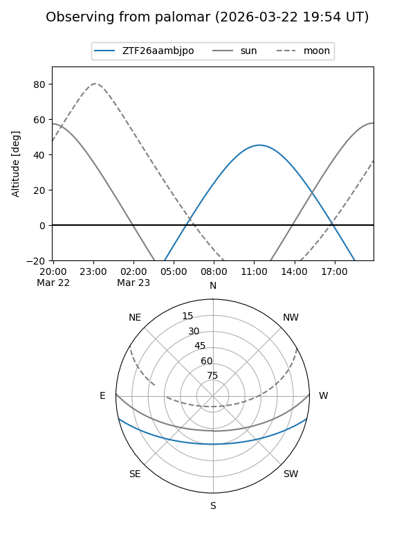

ZTF26aambjpo
Target ZTF26aambjpo at 2026-03-23 11:39
Aliases and brokers:
FINK: link
Lasair: link
ALeRCE: link
alt names
ZTF26aambjpo (ztf,fink_ztf)
Coordinates:
equatorial (ra, dec) = 234.8713,-11.17571
equatorial (HMS+DMS) = 15:39:29.11,-11:10:32.56
galactic (l, b) = (355.3743,+34.08000)
Flags:
Photometry:
last ztfg=17.58, ztfr=16.33
1 ztfg, 1 ztfr detections
Lightcurve

Visibility


Additional plots